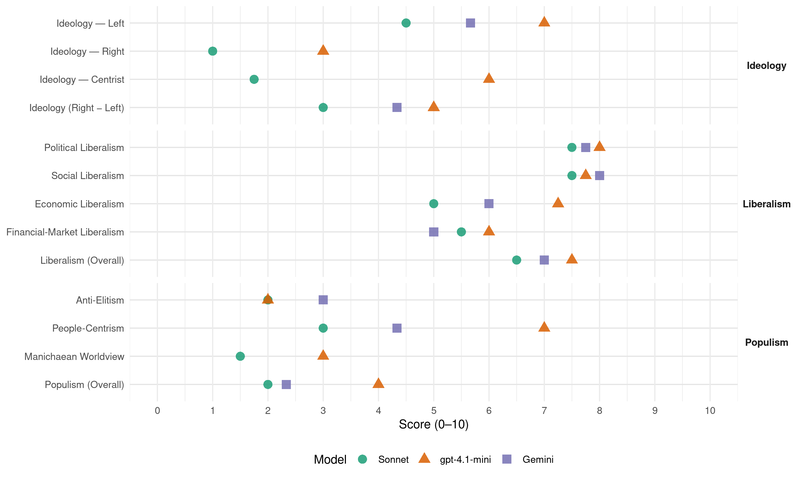

EDEK (Cyprus, 2006)
manifesto_id 55322_200605
Get full text: This site shows derived annotations and short verbatim quotes only. The full manifesto text is © Manifesto Project / WZB — obtain it via manifesto-project.wzb.eu using the manifesto_id above.
Headline scores
| Dimension | Sonnet | gpt-4.1-mini | Gemini |
|---|---|---|---|
| Populism (Overall) | 2.0 | 4.0 | 2.3 |
| Anti-Elitism | 2.0 | 2.0 | 3.0 |
| People-Centrism | 3.0 | 7.0 | 4.3 |
| Manichaean Worldview | 1.5 | 3.0 | – |
| Ideology (Right − Left) | 3.0 | 5.0 | 4.3 |
| Liberalism (Overall) | 6.5 | 7.5 | 7.0 |
| Political Liberalism | 7.5 | 8.0 | 7.8 |
| Social Liberalism | 7.5 | 7.8 | 8.0 |
| Economic Liberalism | 5.0 | 7.2 | 6.0 |
| Financial-Market Liberalism | 5.5 | 6.0 | 5.0 |
Evidence per dimension
Economic Liberalism
Gemini · score 6.0 · mixed · chunk 1
“αποτελεσματικότητα της ελεύθερης αγοράς, με κρατική, όμως, παρέμβαση”
Στην οικονομία, πιστεύουμε στην αποτελεσματικότητα της ελεύθερης αγοράς, με κρατική, όμως, παρέμβαση για αποτροπή ανισορροπιών
Gemini · score 6.0 · verified · chunk 2
“ενίσχυσης της έρευνας στον ιδιωτικό τομέα”
φορολογικά και άλλα μέτρα ενίσχυσης της έρευνας στον ιδιωτικό τομέα και προσέλκυσης ξένων εταιρειών
Gemini · score 6.0 · verified · chunk 3
“φιλελευθεροποίηση των εισαγωγών”
ιδιαίτερα μετά τη φιλελευθεροποίηση των εισαγωγών. Απαιτείται επιτάχυνση της αναδιόρθρωσης
Gemini · score 6.0 · mixed · chunk 4
“συνθήκες υγιούς και θεμιτού ανταγωνισμού”
Δημιουργία προϋποθέσεων παράλληλης λειτουργίας του σε συνθήκες υγιούς και θεμιτού ανταγωνισμού.
gpt-4.1-mini · score 7.0 · verified · chunk 1
“πιστεύουμε στην αποτελεσματικότητα της ελεύθερης αγοράς, με κρατική, όμως, παρέμβαση”
…Στην οικονομία, πιστεύουμε στην αποτελεσματικότητα της ελεύθερης αγοράς, με κρατική, όμως, παρέμβαση για αποτροπή ανισορροπιών, κοινωνικών αδικιών ή καταστροφής του περιβάλλοντος. Το κράτος διατηρεί επιτελικό ρόλο καθοδηγώντας την ιδιωτική πρωτοβουλία σε κατευθύνσεις που είναι κοινωνικό και εθνικό ωφέλιμες…
gpt-4.1-mini · score 7.0 · verified · chunk 2
“Η ανάπτυξη της ατομικής πρωτοβουλίας για σύσταση νέων σύγχρονων επιχειρήσεων θα προωθηθεί μέσω συγκεκριμένων προγραμμάτων και κριτηρίων.”
…Η δημιουργία συνθηκών προώθησης και στήριξης της επιχειρηματικότητας, κυρίως νέων ανθρώπων, βρίσκεται στο επίκεντρο της πολιτικής μας. Η ανάπτυξη της ατομικής πρωτοβουλίας για σύσταση νέων σύγχρονων επιχειρήσεων θα προωθηθεί μέσω συγκεκριμένων προγραμμάτων και κριτηρίων. Προτείνουμε Καθορισμό των οικονομικών δραστηριοτήτων και πρωτοβουλιών…
gpt-4.1-mini · score 7.0 · verified · chunk 3
“Η εφαρμογή πολιτικής υγείας με έμφαση στην πρόληψη και στην προαγωγή της υγείας”
Η εφαρμογή πολιτικής υγείας με έμφαση στην πρόληψη και στην προαγωγή της υγείας και τη βελτίωση του επιπέδου υγείας του κυπριακού πληθυσμού.
gpt-4.1-mini · score 8.0 · verified · chunk 4
“ενίσχυση της ανταγωνιστικότητας της οικονομίας και για βελτίωση της ποιότητας ζωής των πολιτών”
Δημόσια έργα διαδραματίζουν πρωτεύοντα ρόλο στην πορεία για οικονομική και κοινωνική ανάπτυξη, για ενίσχυση της ανταγωνιστικότητας της οικονομίας και για βελτίωση της ποιότητας ζωής των πολιτών.
Sonnet · score 6.0 · mixed · chunk 1
“αποτελεσματικότητα της ελεύθερης αγοράς”
πιστεύουμε στην αποτελεσματικότητα της ελεύθερης αγοράς, με κρατική, όμως, παρέμβαση για αποτροπή ανισορροπιών, κοινωνικών αδικιών
Sonnet · score 5.0 · mixed · chunk 2
“ανάπτυξη της ατομικής πρωτοβουλίας για σύσταση νέων σύγχρονων επιχειρήσεων”
Η ανάπτυξη της ατομικής πρωτοβουλίας για σύσταση νέων σύγχρονων επιχειρήσεων θα προωθηθεί μέσω συγκεκριμένων προγραμμάτων και κριτηρίων
Sonnet · score 5.0 · verified · chunk 3
“απαλλαγή από τη νεοφιλελεύθερη αντιμετώπιση”
Αυτό προϋποθέτει απαλλαγή από τη νεοφιλελεύθερη αντιμετώπιση της οικονομικής ανάπτυξης και την υιοθέτηση μιας κοινωνικής
Sonnet · score 6.0 · mixed · chunk 4
“ελευθεροποιήσεις στους τομείς της αγοράς”
καλούνται να αντιμετωπίσουν τις νέες συνθήκες που επιβάλλουν οι ελευθεροποιήσεις στους τομείς της αγοράς στους οποίους δραστηριοποιούνται
Financial-Market Liberalism
Gemini · score 5.0 · verified · chunk 2
“μέσω των Συνεργατικών Ιδρυμάτων και ιδιωτικών Τραπεζών”
Την πληρωμή των εισφορών και την πληρωμή παροχών μέσω των Συνεργατικών Ιδρυμάτων και ιδιωτικών Τραπεζών.
Gemini · score 5.0 · verified · chunk 3
“ιδιωτικών Τραπεζών”
μέσω των Συνεργατικών Ιδρυμάτων και ιδιωτικών Τραπεζών. Απλοποίηση της γλώσσας στα έντυπα
gpt-4.1-mini · score 6.0 · verified · chunk 1
“Η ένταξη της Κύπρου στην ΟΝΕ και η υιοθέτηση του ευρώ”
…Το Κ.Σ. ΕΔΕΚ θεωρεί ότι ο επόμενος μεγάλος στρατηγικός στόχος είναι η ένταξη στην ΟΝΕ και η υιοθέτηση του ευρώ. Το Κ.Σ. ΕΔΕΚ και σ’ αυτή την προσπάθεια θα διαθέσει το σύνολο των δυνάμεών του…
Sonnet · score 6.0 · verified · chunk 1
“να μην παρατηρηθεί εξαγωγή κεφαλαίων”
ώστε αφενός να μην παρατηρηθεί εξαγωγή κεφαλαίων και αφετέρου να καταστεί δυνατή η προσέλκυση κεφαλαίων
Sonnet · score 5.0 · verified · chunk 2
“Έλεγχο της επενδυτικής πολιτικής τους”
Παράλληλα με το Σχέδιο Κοινωνικών Ασφαλίσεων να ληφθούν μέτρα, για να προστατευτούν τα Επαγγελματικά Σχέδια Συντάξεων και τα Ταμεία Προνοίας με Διασφάλιση της σωστής διαχείρισής τους. Έλεγχο της επενδυτικής πολιτικής τους
Sonnet · score 5.0 · verified · chunk 3
“Έλεγχο της επενδυτικής πολιτικής τους”
Παράλληλα με το Σχέδιο Κοινωνικών Ασφαλίσεων να ληφθούν μέτρα, για να προστατευτούν τα Επαγγελματικά Σχέδια Συντάξεων και τα Ταμεία Προνοίας με Διασφάλιση της σωστής διαχείρισής τους. Έλεγχο της επενδυτικής πολιτικής τους.
Sonnet · score 6.0 · verified · chunk 4
“πλατύτερη δυνατή μετοχική βάση”
είναι επιθυμητό να παρέχεται ουσιαστικό μερίδιο των μετοχών στους εργαζομένους… και γενικά να επιδιώκεται η πλατύτερη δυνατή μετοχική βάση
Political Liberalism
Gemini · score 8.0 · verified · chunk 1
“δικαίωμα στην ελευθερία, τη δημοκρατία”
άνθρωπος, ως ξεχωριστή προσωπικότητα, με δικαίωμα στην ελευθερία, τη δημοκρατία και την οικονομική ευημερία
Gemini · score 7.0 · verified · chunk 2
“καθιερώνει τη δημοκρατία, τη διαφάνεια”
που θα: ρυθμίζει τα ζητήματα του αθλητισμού, καθιερώνει τη δημοκρατία, τη διαφάνεια και τον κοινωνικό έλεγχο
Gemini · score 8.0 · verified · chunk 3
“θεμέλιο της δημοκρατίας και του κράτους δικαίου”
Η δικαιοσύνη είναι θεμέλιο της δημοκρατίας και του κράτους δικαίου. Για να μπορεί να εκπληρώνει αποτελεσματικά
Gemini · score 8.0 · verified · chunk 4
“πλουραλισμός και η δημόσια έκφραση απόψεων”
γιατί ακριβώς ο πλουραλισμός και η δημόσια έκφραση απόψεων, θέσεων, σχολίων και κριτικής είναι τα χαρακτηριστικά
gpt-4.1-mini · score 8.0 · verified · chunk 1
“με δικαίωμα στην ελευθερία, τη δημοκρατία και την οικονομική ευημερία”
…Στο επίκεντρο της πολιτικής μας βρίσκεται ο άνθρωπος, ως ξεχωριστή προσωπικότητα, με δικαίωμα στην ελευθερία, τη δημοκρατία και την οικονομική ευημερία, αλλά και ως μέλος μιας κοινωνίας που σέβεται τους θεσμούς, την αξιοκρατία, το περιβάλλον και τις επερχόμενες γενεές…
gpt-4.1-mini · score 7.0 · verified · chunk 2
“Δημοκρατία και Διαφάνεια Πρόταση και πολιτική βούλησή μας είναι η ταχύτερη δυνατή προώθηση της σύστασης και λειτουργίας των Εργατικών Συμβουλίων.”
…Κατοχύρωση και προστασία του θεσμού των ελεύθερων συλλογικών διαπραγματεύσεων και των συλλογικών συμβάσεων. Δημοκρατία και Διαφάνεια Πρόταση και πολιτική βούλησή μας είναι η ταχύτερη δυνατή προώθηση της σύστασης και λειτουργίας των Εργατικών Συμβουλίων. Πιστεύουμε στις διαδικασίες συμμετοχής, διαφάνειας και δημοκρατίας μεταξύ εργοδοτών και εργοδοτουμένων…
gpt-4.1-mini · score 8.0 · verified · chunk 3
“Η δικαιοσύνη είναι θεμέλιο της δημοκρατίας και του κράτους δικαίου”
Η δικαιοσύνη είναι θεμέλιο της δημοκρατίας και του κράτους δικαίου. Για να μπορεί να εκπληρώνει αποτελεσματικά την αποστολή της, χρειάζεται συνεχή ηθική και υλική ενίσχυση.
gpt-4.1-mini · score 9.0 · verified · chunk 4
“πλήρης σεβασμός στα ατομικά, πολιτικά και ανθρώπινα δικαιώματα πολιτών”
πλαίσιο αρχών και κανόνων: Πλήρης σεβασμός στα ατομικά, πολιτικά και ανθρώπινα δικαιώματα πολιτών και κοινωνικών ομάδων. Η προσωπική ζωή των πολιτών είναι ιερή και ως τέτοια πρέπει να αντιμετωπίζεται.
Sonnet · score 8.0 · verified · chunk 1
“δικαίωμα στην ελευθερία, τη δημοκρατία”
Στο επίκεντρο της πολιτικής μας βρίσκεται ο άνθρωπος, ως ξεχωριστή προσωπικότητα, με δικαίωμα στην ελευθερία, τη δημοκρατία και την οικονομική ευημερία
Sonnet · score 7.0 · verified · chunk 2
“καθιερώνει τη δημοκρατία, τη διαφάνεια και τον κοινωνικό έλεγχο”
Επιβάλλεται η διαμόρφωση και ψήφιση νόμου-πλαισίου που θα: ρυθμίζει τα ζητήματα του αθλητισμού, καθιερώνει τη δημοκρατία, τη διαφάνεια και τον κοινωνικό έλεγχο
Sonnet · score 7.0 · verified · chunk 3
“θεμέλιο της δημοκρατίας και του κράτους δικαίου”
Η δικαιοσύνη είναι θεμέλιο της δημοκρατίας και του κράτους δικαίου. Για να μπορεί να εκπληρώνει αποτελεσματικά την αποστολή της
Sonnet · score 8.0 · verified · chunk 4
“πλουραλισμός και η δημόσια έκφραση απόψεων”
ο πλουραλισμός και η δημόσια έκφραση απόψεων, θέσεων, σχολίων και κριτικής είναι τα χαρακτηριστικά που διαμορφώνουν και δίνουν ουσιαστικό περιεχόμενο και ποιότητα στη δημοκρατία
Liberalism (Overall)
Gemini · score 7.0 · verified · chunk 1
“δικαίωμα στην ελευθερία, τη δημοκρατία”
άνθρωπος, ως ξεχωριστή προσωπικότητα, με δικαίωμα στην ελευθερία, τη δημοκρατία και την οικονομική ευημερία
Gemini · score 7.0 · verified · chunk 2
“καθιερώνει τη δημοκρατία, τη διαφάνεια”
που θα: ρυθμίζει τα ζητήματα του αθλητισμού, καθιερώνει τη δημοκρατία, τη διαφάνεια και τον κοινωνικό έλεγχο
Gemini · score 7.0 · verified · chunk 3
“θεμέλιο της δημοκρατίας και του κράτους δικαίου”
Η δικαιοσύνη είναι θεμέλιο της δημοκρατίας και του κράτους δικαίου. Για να μπορεί να εκπληρώνει αποτελεσματικά
Gemini · score 7.0 · verified · chunk 4
“πλουραλισμός και η δημόσια έκφραση απόψεων”
γιατί ακριβώς ο πλουραλισμός και η δημόσια έκφραση απόψεων, θέσεων, σχολίων και κριτικής είναι τα χαρακτηριστικά
gpt-4.1-mini · score 7.0 · verified · chunk 1
“πιστεύουμε στην αποτελεσματικότητα της ελεύθερης αγοράς, με κρατική, όμως, παρέμβαση”
…Στην οικονομία, πιστεύουμε στην αποτελεσματικότητα της ελεύθερης αγοράς, με κρατική, όμως, παρέμβαση για αποτροπή ανισορροπιών, κοινωνικών αδικιών ή καταστροφής του περιβάλλοντος. Το κράτος διατηρεί επιτελικό ρόλο καθοδηγώντας την ιδιωτική πρωτοβουλία σε κατευθύνσεις που είναι κοινωνικό και εθνικό ωφέλιμες…
gpt-4.1-mini · score 7.0 · verified · chunk 2
“Η προώθηση της ισότητας των φύλων στην κυπριακή κοινωνία είναι ένας από τους πρωταρχικούς μας στόχους”
…ΙΣΟΤΗΤΑ ΤΩΝ ΦΥΛΩΝ Η προώθηση της ισότητας των φύλων στην κυπριακή κοινωνία είναι ένας από τους πρωταρχικούς μας στόχους, ο οποίος θα υλοποιηθεί με το σωστό προγραμματισμό…
gpt-4.1-mini · score 8.0 · verified · chunk 3
“Η δικαιοσύνη είναι θεμέλιο της δημοκρατίας και του κράτους δικαίου”
Η δικαιοσύνη είναι θεμέλιο της δημοκρατίας και του κράτους δικαίου. Για να μπορεί να εκπληρώνει αποτελεσματικά την αποστολή της, χρειάζεται συνεχή ηθική και υλική ενίσχυση.
gpt-4.1-mini · score 8.0 · verified · chunk 4
“πλήρης σεβασμός στα ατομικά, πολιτικά και ανθρώπινα δικαιώματα πολιτών και κοινωνικών ομάδων”
πλαίσιο αρχών και κανόνων: Πλήρης σεβασμός στα ατομικά, πολιτικά και ανθρώπινα δικαιώματα πολιτών και κοινωνικών ομάδων. Η προσωπική ζωή των πολιτών είναι ιερή και ως τέτοια πρέπει να αντιμετωπίζεται.
Sonnet · score 7.0 · verified · chunk 1
“δικαίωμα στην ελευθερία, τη δημοκρατία”
Στο επίκεντρο της πολιτικής μας βρίσκεται ο άνθρωπος, ως ξεχωριστή προσωπικότητα, με δικαίωμα στην ελευθερία, τη δημοκρατία και την οικονομική ευημερία
Sonnet · score 6.0 · verified · chunk 2
“Η προώθηση της ισότητας των φύλων”
Η προώθηση της ισότητας των φύλων στην κυπριακή κοινωνία είναι ένας από τους πρωταρχικούς μας στόχους, ο οποίος θα υλοποιηθεί με το σωστό προγραμματισμό
Sonnet · score 6.0 · verified · chunk 3
“θεμέλιο της δημοκρατίας και του κράτους δικαίου”
Η δικαιοσύνη είναι θεμέλιο της δημοκρατίας και του κράτους δικαίου. Για να μπορεί να εκπληρώνει αποτελεσματικά την αποστολή της
Sonnet · score 7.0 · verified · chunk 4
“πλουραλισμός και η δημόσια έκφραση απόψεων”
ο πλουραλισμός και η δημόσια έκφραση απόψεων, θέσεων, σχολίων και κριτικής είναι τα χαρακτηριστικά που διαμορφώνουν και δίνουν ουσιαστικό περιεχόμενο και ποιότητα στη δημοκρατία
Anti-Elitism
Gemini · score 3.0 · verified · chunk 2
“μέσω του ρουσφετιου και της αναξιοκρατίας”
Η καταπάτηση της ανθρώπινης αξιοπρέπειας, μέσω του ρουσφετιου και της αναξιοκρατίας, αποτελεί μάστιγα για την κυπριακή κοινωνία
Gemini · score 3.0 · verified · chunk 4
“διασύνδεσης ομάδων του οργανωμένου εγκλήματος με την πολιτική”
υπάρχουν κάποιες ενδείξεις για απόπειρες διασύνδεσης ομάδων του οργανωμένου εγκλήματος με την πολιτική και με μέλη του αστυνομικού σώματος.
gpt-4.1-mini · score 2.0 · verified · chunk 1
“Είμαστε υπέρμαχοι κάθε πρωτοβουλίας που ενισχύει την ενεργό συμμετοχή του πολίτη στα κοινό”
…ενισχύει τους μη προνομιούχους, για τη δημιουργία συνθηκών ανέλιξης για όλους και συμμετοχής τους στο κοινωνικό προϊόν και την πολιτισμική ανάπτυξη. Είμαστε υπέρμαχοι κάθε πρωτοβουλίας που ενισχύει την ενεργό συμμετοχή του πολίτη στα κοινό, την αποκέντρωση της εξουσίας και την ελευθερία του ατόμου και που προάγει την κοινωνική δικαιοσύνη. Εργαζόμαστε για ένα καλύτερο αύριο…
Sonnet · score 2.0 · verified · chunk 1
“τους «επιτηδείων» για διάλυση των ενόπλων”
θα είμαστε εμπόδιο στους οραματισμούς των «επιτηδείων» για διάλυση των ενόπλων δυνάμεων ή για μετατροπή τους σε μισθοφορικό στρατό
Sonnet · score 2.0 · verified · chunk 2
“απελευθερώνει τον αθλητισμό από τον εναγκαλισμό κομματικών και οικονομικών κυκλωμάτων”
νόμου-πλαισίου που θα: ρυθμίζει τα ζητήματα του αθλητισμού, καθιερώνει τη δημοκρατία, τη διαφάνεια και τον κοινωνικό έλεγχο, απελευθερώνει τον αθλητισμό από τον εναγκαλισμό κομματικών και οικονομικών κυκλωμάτων
Sonnet · score 2.0 · verified · chunk 3
“αλόγιστου κέρδους”
Το δομημένο περιβάλλον υποβαθμίζεται χάριν της ποσότητας και του αλόγιστου κέρδους.
Sonnet · score 2.0 · verified · chunk 4
“ιδιωτικά συμφέροντα”
αποτρέπεται η εκμετάλλευση της κομβικής θέσης αποκρατικοποιημένων οργανισμών από ιδιωτικά συμφέροντα
Ideology — Centrist
gpt-4.1-mini · score 6.0 · verified · chunk 1
“Είμαστε υπέρμαχοι κάθε πρωτοβουλίας που ενισχύει την ενεργό συμμετοχή του πολίτη στα κοινό”
…Είμαστε υπέρμαχοι κάθε πρωτοβουλίας που ενισχύει την ενεργό συμμετοχή του πολίτη στα κοινό, την αποκέντρωση της εξουσίας και την ελευθερία του ατόμου και που προάγει την κοινωνική δικαιοσύνη. Εργαζόμαστε για ένα καλύτερο αύριο…
Sonnet · score 1.0 · verified · chunk 1
“μεγαλύτερη δυνατή κοινωνική συναίνεση”
για την επίλυσή τους θα πρέπει να υπάρχει η μεγαλύτερη δυνατή κοινωνική συναίνεση
Sonnet · score 2.0 · verified · chunk 2
“να γίνει κτήμα του λαού”
Η πολιτιστική ανάπτυξη επιβάλλεται να είναι πολυδιάστατη και πολυεπίπεδη, για να μπορέσει ο πολιτισμός να γίνει κτήμα του λαού
Sonnet · score 1.0 · verified · chunk 3
“παλλαϊκή στήριξη”
δεν μπορούν να καταπολεμηθούν παρά μόνο με αποφασιστικά μέτρα, που θα στηρίζονται στην ομόθυμη παλλαϊκή στήριξη
Sonnet · score 3.0 · verified · chunk 4
“ευρύτερο εθνικό και κοινωνικό συμφέρον”
να συνεχίσουν να εκπληρώνουν και το σημαντικότερο μέρος της αποστολής τους, δηλαδή την εξυπηρέτηση του ευρύτερου εθνικού και κοινωνικού συμφέροντος
Ideology — Left
Gemini · score 6.0 · verified · chunk 1
“προάσπιση των μικρομεσαίων στρωμάτων του λαoυ”
στο επίκεντρο της κοινωνικής του πολιτικής την προάσπιση των μικρομεσαίων στρωμάτων του λαoυ και γενικά των μη-προνομιούχων
Gemini · score 6.0 · verified · chunk 2
“καταπολέμηση της φτώχειας και του κοινωνικού”
Πρόσβαση σε κοινωνικές παροχές και δικαιώματα. Πρόσβαση στην εκπαίδευση, μετεκπαίδευση και διό βίου μάθηση. Καταπολέμηση της φτώχειας και του κοινωνικού αποκλεισμού.
Gemini · score 5.0 · verified · chunk 4
“μέτρο Κοινωνικής Πρόνοιας”
θα πρέπει να αντιμετωπιστεί σαν μέτρο Κοινωνικής Πρόνοιας.
gpt-4.1-mini · score 7.0 · verified · chunk 1
“Μεριμνά για τη δίκαιη κατανομή του εισοδήματος, για την προστασία των μη προνομιούχων”
…Το κράτος διατηρεί επιτελικό ρόλο καθοδηγώντας την ιδιωτική πρωτοβουλία σε κατευθύνσεις που είναι κοινωνικό και εθνικό ωφέλιμες. Μεριμνά για τη δίκαιη κατανομή του εισοδήματος, για την προστασία των μη προνομιούχων, για τη δημιουργία συνθηκών ανέλιξης για όλους και συμμετοχής τους στο κοινωνικό προϊόν και την πολιτισμική ανάπτυξη…
Sonnet · score 5.0 · verified · chunk 1
“δίκαιη κατανομή του εισοδήματος”
Μεριμνά για τη δίκαιη κατανομή του εισοδήματος, για την προστασία των μη προνομιούχων, για τη δημιουργία συνθηκών ανέλιξης για όλους
Sonnet · score 5.0 · verified · chunk 2
“διατήρηση της αλληλεγγύης, της δικαιοσύνης και της ισότητας ευκαιριών”
Η επένδυση στο πλούσιο ανθρώπινο δυναμικό και η οικοδόμηση κράτους πρόνοιας με κύριους άξονες τη διατήρηση της αλληλεγγύης, της δικαιοσύνης και της ισότητας ευκαιριών
Sonnet · score 4.0 · verified · chunk 3
“Ο Σοσιαλισμός δρα σε μια ενότητα φύσης”
Ο Σοσιαλισμός δρα σε μια ενότητα φύσης και ανθρώπινης κοινωνίας, γι’ αυτό πιστεύει και αγωνίζεται για την αρμονική ανάπτυξη
Sonnet · score 4.0 · verified · chunk 4
“δημόσιο χαρακτήρα τους”
να διατηρήσουν το δημόσιο χαρακτήρα τους, ώστε να συνεχίσουν να εκπληρώνουν και το σημαντικότερο μέρος της αποστολής τους
Ideology (Right − Left)
Gemini · score 5.0 · verified · chunk 1
“προάσπιση των μικρομεσαίων στρωμάτων του λαoυ”
στο επίκεντρο της κοινωνικής του πολιτικής την προάσπιση των μικρομεσαίων στρωμάτων του λαoυ και γενικά των μη-προνομιούχων
Gemini · score 5.0 · verified · chunk 2
“καταπολέμηση της φτώχειας και του κοινωνικού”
Πρόσβαση σε κοινωνικές παροχές και δικαιώματα. Πρόσβαση στην εκπαίδευση, μετεκπαίδευση και διό βίου μάθηση. Καταπολέμηση της φτώχειας και του κοινωνικού αποκλεισμού.
Gemini · score 3.0 · verified · chunk 4
“μέτρο Κοινωνικής Πρόνοιας”
θα πρέπει να αντιμετωπιστεί σαν μέτρο Κοινωνικής Πρόνοιας.
gpt-4.1-mini · score 5.0 · verified · chunk 1
“Είμαστε υπέρμαχοι κάθε πρωτοβουλίας που ενισχύει την ενεργό συμμετοχή του πολίτη στα κοινό”
…Είμαστε υπέρμαχοι κάθε πρωτοβουλίας που ενισχύει την ενεργό συμμετοχή του πολίτη στα κοινό, την αποκέντρωση της εξουσίας και την ελευθερία του ατόμου και που προάγει την κοινωνική δικαιοσύνη. Εργαζόμαστε για ένα καλύτερο αύριο…
Sonnet · score 3.0 · verified · chunk 1
“δίκαιη κατανομή του εισοδήματος”
Μεριμνά για τη δίκαιη κατανομή του εισοδήματος, για την προστασία των μη προνομιούχων, για τη δημιουργία συνθηκών ανέλιξης για όλους
Sonnet · score 3.0 · verified · chunk 2
“οικοδόμηση κράτους πρόνοιας με κύριους άξονες”
Η επένδυση στο πλούσιο ανθρώπινο δυναμικό και η οικοδόμηση κράτους πρόνοιας με κύριους άξονες τη διατήρηση της αλληλεγγύης, της δικαιοσύνης και της ισότητας ευκαιριών
Sonnet · score 3.0 · verified · chunk 3
“Ο Σοσιαλισμός δρα σε μια ενότητα φύσης”
Ο Σοσιαλισμός δρα σε μια ενότητα φύσης και ανθρώπινης κοινωνίας, γι’ αυτό πιστεύει και αγωνίζεται για την αρμονική ανάπτυξη
Sonnet · score 3.0 · verified · chunk 4
“δημόσιο χαρακτήρα τους”
να διατηρήσουν το δημόσιο χαρακτήρα τους, ώστε να συνεχίσουν να εκπληρώνουν και το σημαντικότερο μέρος της αποστολής τους
Ideology — Right
gpt-4.1-mini · score 3.0 · verified · chunk 1
“Οι Ελληνοκύπριοι ζουν με τη διαρκή απειλή εθνικού αφανισμού”
…Όλοι οι Κύπριοι είναι θύματα του τούρκικου επεκτατισμού. Οι Ελληνοκύπριοι ζουν με τη διαρκή απειλή εθνικού αφανισμού και οι Τουρκοκύπριοι κάτω από ένα ανελεύθερο στρατοκρατικό εποικιστικό καθεστώς που τους υποχρεώνει σε μαζική φυγή…
Sonnet · score 1.0 · verified · chunk 1
“εθνικής και πολιτιστικής μας ταυτότητα”
Πιστεύουμε στην ανάγκη διατήρησης της εθνικής και πολιτιστικής μας ταυτότητα, με απόλυτο σεβασμό στην εθνική και πολιτιστική ταυτότητα των άλλων κοινοτήτων
Sonnet · score 1.0 · verified · chunk 2
“να διασώσει την ιδιαίτερη φυσιογνωμία της”
Η Κύπρος είναι υποχρεωμένη να διασώσει την ιδιαίτερη φυσιογνωμία της, σεβόμενη την ταυτότητα άλλων λαών που λειτουργούν στην πολυπολιτισμική κοινωνία
Sonnet · score 1.0 · verified · chunk 3
“εθνικής μας ταυτότητας”
Το Κ.Σ. ΕΔΕΚ θεωρεί την ύπαιθρο το βασικό χαρακτηριστικό γνώρισμα της εθνικής μας ταυτότητας
Manichaean Worldview
gpt-4.1-mini · score 3.0 · verified · chunk 1
“Όλοι οι Κύπριοι είναι θύματα του τούρκικου επεκτατισμού”
…Η χώρα μας αντιμετωπίζει καθημερινά τις συνέπειες της τουρκικής εισβολής και κατοχής. Όλοι οι Κύπριοι είναι θύματα του τούρκικου επεκτατισμού. Οι Ελληνοκύπριοι ζουν με τη διαρκή απειλή εθνικού αφανισμού και οι Τουρκοκύπριοι κάτω από ένα ανελεύθερο στρατοκρατικό εποικιστικό καθεστώς…
Sonnet · score 2.0 · verified · chunk 1
“τουρκικής εισβολής και κατοχής”
Η χώρα μας αντιμετωπίζει καθημερινά τις συνέπειες της τουρκικής εισβολής και κατοχής. Όλοι οι Κύπριοι είναι θύματα
Sonnet · score 1.0 · verified · chunk 2
“η αναξιοκρατία, αποτελεί μάστιγα για την κυπριακή κοινωνία”
Η καταπάτηση της ανθρώπινης αξιοπρέπειας, μέσω του ρουσφετιου και της αναξιοκρατίας, αποτελεί μάστιγα για την κυπριακή κοινωνία που πρέπει ν’ αντιμετωπιστεί
Sonnet · score 2.0 · verified · chunk 3
“εκκολαπτήρια του εγκλήματος”
οι φυλακές έχουν εξελιχτεί σε εκκολαπτήρια του εγκλήματος. Χρειάζονται σύγχρονα συστήματα
Sonnet · score 1.0 · verified · chunk 4
“φαινόμενα ασυδοσίας και αντικοινωνικής συμπεριφοράς”
Το πρώτο θα οδηγούσε σε φαινόμενα ασυδοσίας και αντικοινωνικής συμπεριφοράς της αγοράς
People-Centrism
Gemini · score 5.0 · verified · chunk 1
“Ο λαός γνωρίζει ότι για το Κίνημα”
καθοδηγεί τις δραστηριότητές μας. Ο λαός γνωρίζει ότι για το Κίνημα μας δεν υπάρχει απόσταση μεταξύ λόγων
Gemini · score 4.0 · verified · chunk 2
“να γίνει κτήμα του λαού”
πολυεπίπεδη, για να μπορέσει ο πολιτισμός να γίνει κτήμα του λαού. Στο πλαίσιο αυτό ως Κ.Σ.
Gemini · score 4.0 · verified · chunk 4
“αφορά ολόκληρο το λαό”
Η υπόθεση της προστασίας του δασικού μας πλούτου αφορά ολόκληρο το λαό και γι ’ αυτό πρέπει να δοθεί μεγάλη σημασία
gpt-4.1-mini · score 7.0 · verified · chunk 1
“Στο επίκεντρο της πολιτικής μας βρίσκεται ο άνθρωπος, ως ξεχωριστή προσωπικότητα”
…Σοσιαλιστικών και Σοσιαλδημοκρατικών κομμάτων. Οι αρχές και οι αξίες μας μετατρέπονται σε πολιτική πράξη στην Ευρώπη και σε κάθε γωνιά του πλανήτη μας. Στο επίκεντρο της πολιτικής μας βρίσκεται ο άνθρωπος, ως ξεχωριστή προσωπικότητα, με δικαίωμα στην ελευθερία, τη δημοκρατία και την οικονομική ευημερία, αλλά και ως μέλος μιας κοινωνίας που σέβεται τους θεσμούς…
Sonnet · score 3.0 · verified · chunk 1
“Αφορούν το σύνολο του λαού”
Αφορούν το σύνολο του λαού γι’ αυτό και για την επίλυσή τους θα πρέπει να υπάρχει η μεγαλύτερη δυνατή κοινωνική συναίνεση
Sonnet · score 3.0 · verified · chunk 2
“να γίνει κτήμα του λαού”
Η πολιτιστική ανάπτυξη επιβάλλεται να είναι πολυδιάστατη και πολυεπίπεδη, για να μπορέσει ο πολιτισμός να γίνει κτήμα του λαού
Sonnet · score 3.0 · verified · chunk 3
“ο δείκτης «ευημερίας του λαού»”
ο δείκτης «ευημερίας του λαού» μπορεί σε μεγάλο βαθμό να προσδιορισθεί από το επίπεδο της προσφερόμενης ιατροφαρμακευτικής περίθαλψης
Sonnet · score 3.0 · verified · chunk 4
“εξυπηρέτηση του ευρύτερου κοινωνικού συμφέροντος”
με μοναδικό στόχο την αύξηση της οικονομικής αποτελεσματικότητας του οργανισμού… και η συνέχιση του ρόλου του οργανισμού σε υπηρεσίες κοινής ωφέλειας. Προτάσεις για αποκρατικοποίηση θα πρέπει να αξιολογούνται με βάση το κριτήριο της εξυπηρέτησης του ευρύτερου κοινωνικού συμφέροντος
Populism (Overall)
Gemini · score 2.0 · verified · chunk 1
“Ο λαός γνωρίζει ότι για το Κίνημα”
καθοδηγεί τις δραστηριότητές μας. Ο λαός γνωρίζει ότι για το Κίνημα μας δεν υπάρχει απόσταση μεταξύ λόγων
Gemini · score 3.0 · verified · chunk 2
“μέσω του ρουσφετιου και της αναξιοκρατίας”
Η καταπάτηση της ανθρώπινης αξιοπρέπειας, μέσω του ρουσφετιου και της αναξιοκρατίας, αποτελεί μάστιγα για την κυπριακή κοινωνία
Gemini · score 2.0 · verified · chunk 4
“διασύνδεσης ομάδων του οργανωμένου εγκλήματος με την πολιτική”
υπάρχουν κάποιες ενδείξεις για απόπειρες διασύνδεσης ομάδων του οργανωμένου εγκλήματος με την πολιτική και με μέλη του αστυνομικού σώματος.
gpt-4.1-mini · score 4.0 · verified · chunk 1
“Είμαστε υπέρμαχοι κάθε πρωτοβουλίας που ενισχύει την ενεργό συμμετοχή του πολίτη στα κοινό”
…Είμαστε υπέρμαχοι κάθε πρωτοβουλίας που ενισχύει την ενεργό συμμετοχή του πολίτη στα κοινό, την αποκέντρωση της εξουσίας και την ελευθερία του ατόμου και που προάγει την κοινωνική δικαιοσύνη. Εργαζόμαστε για ένα καλύτερο αύριο, μέσα από τη μεταρρύθμιση του εκπαιδευτικού μας συστήματος…
Sonnet · score 2.0 · verified · chunk 1
“Αφορούν το σύνολο του λαού”
Αφορούν το σύνολο του λαού γι’ αυτό και για την επίλυσή τους θα πρέπει να υπάρχει η μεγαλύτερη δυνατή κοινωνική συναίνεση
Sonnet · score 2.0 · verified · chunk 2
“απελευθερώνει τον αθλητισμό από τον εναγκαλισμό κομματικών”
νόμου-πλαισίου που θα: ρυθμίζει τα ζητήματα του αθλητισμού, καθιερώνει τη δημοκρατία, τη διαφάνεια και τον κοινωνικό έλεγχο, απελευθερώνει τον αθλητισμό από τον εναγκαλισμό κομματικών και οικονομικών κυκλωμάτων
Sonnet · score 2.0 · verified · chunk 3
“αλόγιστου κέρδους”
Το δομημένο περιβάλλον υποβαθμίζεται χάριν της ποσότητας και του αλόγιστου κέρδους.
Sonnet · score 2.0 · verified · chunk 4
“ιδιωτικά συμφέροντα”
αποτρέπεται η εκμετάλλευση της κομβικής θέσης αποκρατικοποιημένων οργανισμών από ιδιωτικά συμφέροντα
Social Liberalism